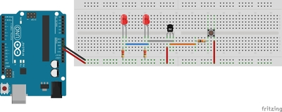

Sabato 1 aprile 2017, la nostra classe si è recata presso il Centro Insieme alla Canalina dove si è svolta la giornata di alternanza denominata "Arduino Day" dedicata, appunto, al software di Arduino. La nostra classe è stata accompagnata dal prof. Carpanoni Nicola, il quale, insieme a Gecchè, membro di Impact Hub, alcuni ragazzi di quarta informatica del bus,
il prof. Saccani, la professoressa Cattani e la professoressa Ricceri ci hanno assistito durante la mattinata.

L’Arduino Day consiste nella celebrazione del compleanno di Arduino in tutto il mondo attraverso eventi basati su questo progetto. Arduino ha riscosso davvero molto successo in tutto il mondo basta pensare che per l’Arduino Day sono stati organizzati 499 eventi in 78 nazioni .
Ci hanno proposto 3 diversi tipi di esercizi da svolgere:
SEMAFORO:(accendere in sequenza i led rosso,giallo e verde);
FOTO RESISTORE:(piccolo componente che capta la presenza della luce restituendo dei valori basati dalla potenza);
INFRAROSSI:(grazie a un telecomando e puntandolo sul componente questo ci restituisce dei valori).